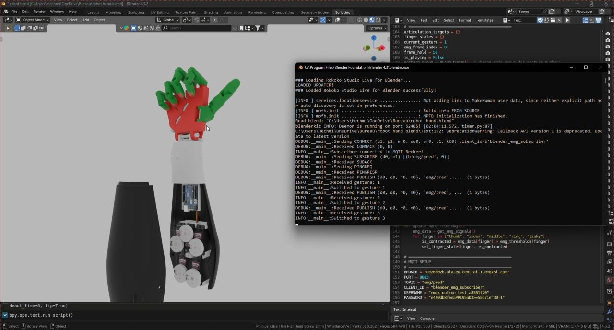
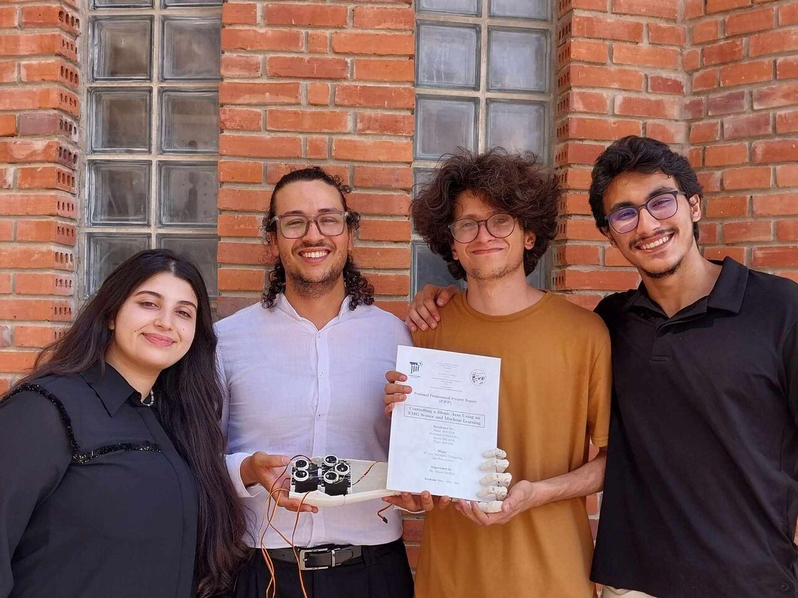

The goal
Commercial myoelectric prostheses cost thousands and adapt poorly to their user. We set out to build the opposite: a low-cost, self-learning bionic arm that reads forearm muscle activity and translates it into natural hand gestures — using accessible hardware and open tools.
Three systems, one pipeline
- Hand-built EMG signal conditioning circuit — a four-stage analog chain designed and assembled from scratch: instrumentation-amplifier differential amplification (up to 1000×), precision rectification, band-pass filtering to isolate the 20–500 Hz EMG band, and envelope smoothing into a clean analog voltage proportional to muscle contraction.
- Tiny machine-learning classifier on the edge — EMG windows are modeled with autoregressive (ARMA) coefficients plus time-domain features (MAV, RMS, zero crossings, slope sign changes), then classified by a compact model deployed on an ESP32-class microcontroller. Data augmentation (noise injection, amplitude scaling, time warping) compensated for a small self-recorded dataset.
- Live Blender simulation over MQTT — recognized gestures are published to an MQTT broker; a 22-bone rigged hand in Blender subscribes and animates the matching gesture in real time, with confidence-weighted animation blending. This validated the whole pipeline — under 300 ms end-to-end — before driving the physical tendon-actuated hand.
The physical hand
The 3D-printed hand replicates human skeletal structure — proximal, middle and distal phalanges with MCP/PIP/DIP joints — actuated by five servos pulling nylon "tendons", staying under 400 g. The modular design keeps it cheap to customize and repair, which is the point: prosthetics this capable shouldn't be out of reach.